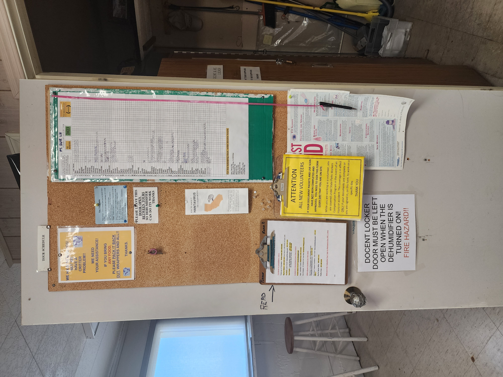

Cosing the Visitors Center After a Tour
In this section you will learn the series of task necessary to close the Visitors Center after the tour.
The following is a suggested ordely list of these tasks. Once you become more familiar with the operation of the VC, you will create your own routine to accomplish them.
1.

2.
At the NavFac, you will find any updates posted in the Docent's room.

3.
At the NavFac, the radios, radio port and cash box are located in the Docent's room.

4.
There is no beverage bar at the NavFac, but the donation jar is located on the brochures table.

5.

Notes
At the NavFac, D1 or D2 take care of raising the flags and placing any signs outside the building.

Notes